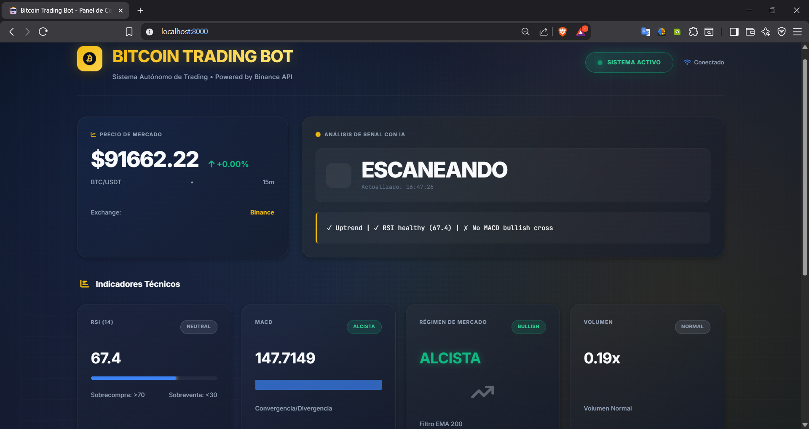
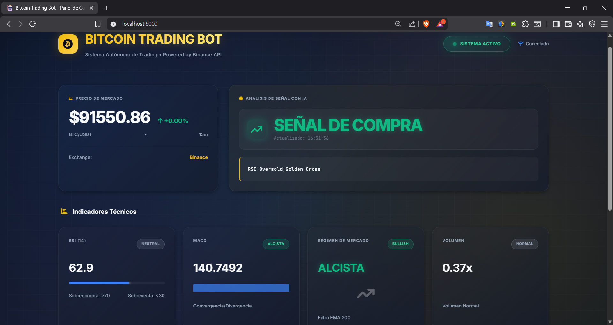
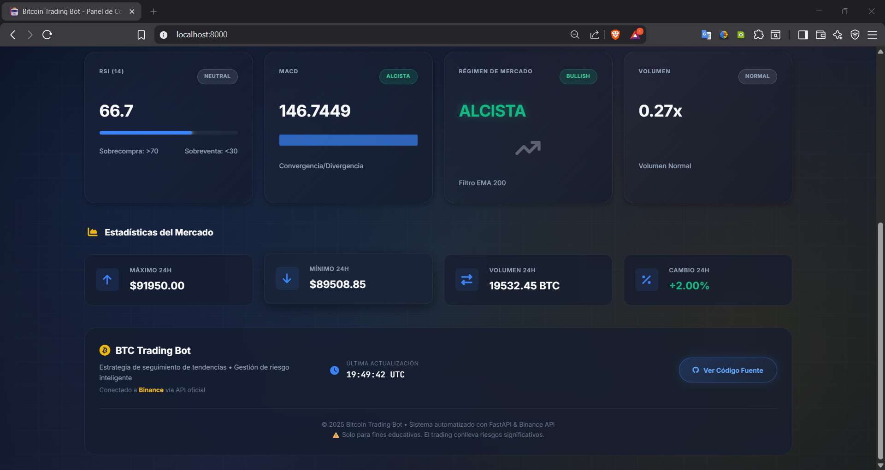

BTC Trader
Un bot que analiza el mercado de Bitcoin las 24 horas, detecta señales con varios indicadores a la vez y opera con gestión de riesgo automática, mientras un panel web muestra en vivo qué está viendo y por qué decide.



El panel de monitoreo en tiempo real, escaneando el mercado y mostrando el estado de cada indicador.
Una señal de compra confirmada, con los factores que coincidieron para habilitar la entrada.
Estadísticas adicionales del bot y de las operaciones.
Tocá una captura para verla grande
El problema
Operar cripto a mano obliga a estar mirando gráficos todo el día y a decidir con información parcial. Quería un sistema que vigilara el mercado sin pausa, exigiera confirmación de varios indicadores antes de entrar y cuidara el capital en cada operación.
Seguir el mercado a mano, mirando gráficos y decidiendo con un solo indicador.
Un sistema que vigila, confirma señales con varios factores y opera solo, con stop loss y take profit calculados en cada entrada.
Lo que construí
- Estrategia de seguimiento de tendencia que solo entra cuando coinciden RSI, MACD, la EMA de 200 como filtro de régimen de mercado y anomalías de volumen.
- Stop loss y take profit dinámicos, calculados en cada operación.
- Núcleo asíncrono con asyncio, donde la lógica de trading y el servidor web corren a la vez sin bloquearse.
- Persistencia en SQLite para recuperar las posiciones abiertas después de cualquier reinicio.
- API con FastAPI y un panel web que muestra en vivo el escaneo, las señales detectadas y las estadísticas.
- Conexión a Binance mediante CCXT, avisos por Telegram y modo de simulación que funciona sin claves.